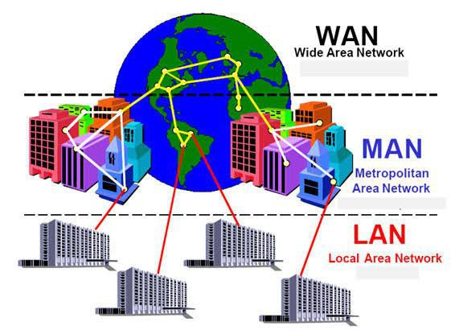
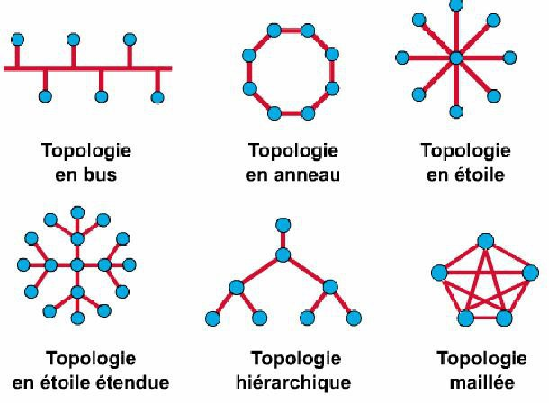

Chapter 2 : Network
Chapitre 2 - Les Réseaux Informatique
Chapitre 2 : Les Réseaux Informatique
1) Réseau (informatique) Network:
Un réseau informatique comprend deux ordinateurs ou plus connectés par des câbles ou par WiFi dans le but de transmettre, d'échanger ou de partager des données et des ressources.
Un réseau s’appuie sur deux notions fondamentales:
- L’interconnexion
- La communication
2) Les caractéristiques de base d’un réseau sont :
- La topologie
- Le débit exprimé en bits/s (ou bps)
- La distance maximale
- Le nombre de nœuds maximum
3) Quelques terminologies en réseau
- Station de travail : toute machine capable d’envoyer des données vers les réseaux.
- Nœud : C’est une station de travail.
- Paquet : contient l’adresse de l’émetteur, l’adresse du récepteur et les données à transmettre.
- Réseaux Homogènes : Tous les ordinateurs sont de même constructeurs : Apple-Talk.
- Réseaux Hétérogènes : Les ordinateurs reliés au réseau sont de constructeurs divers : Ethernet.
- Le Débit : mesure une quantité de données numériques (bits) transmises par seconde (bit/s ou bps).
4) Éléments d'un réseau
- Les ordinateurs
- Les logiciels
- Les supports du : LAN, WAN
- Les équipements d'interconnexion du LAN : répéteur, concentrateur, commutateur WAN : routeur.
5) Classification des réseaux :
5.1 Par portée de la distance :

5.2 L’ouverture (leur utilisation) : selon des services on distingue :
- Intranet : c’est un réseau local privé.
- Extranet : c’est un réseau privé interne et externe ouvert vers l’extérieur.
- Internet les réseaux publics.
5.3 Les supports de connexion :
- Réseaux filaires : les réseaux qui utilisent le câble coaxial.
- Réseaux sans fils : elles fondent sur d’autres moyennes (les satellites, le Bluetooth).
5.4 Le type d’organisation (Peer to Peer et client-serveur) :
- Les réseaux postes à postes : chaque ordinateur est un peu serveur et un peu client
- Les réseaux client /serveur : il y a un serveur spécifique et des client spécifiques connectés au serveur
6) Classification des réseaux :
